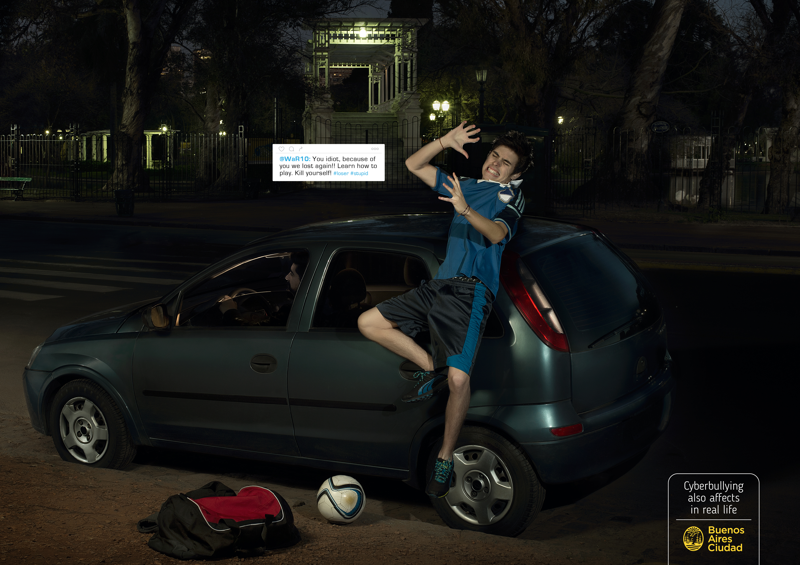
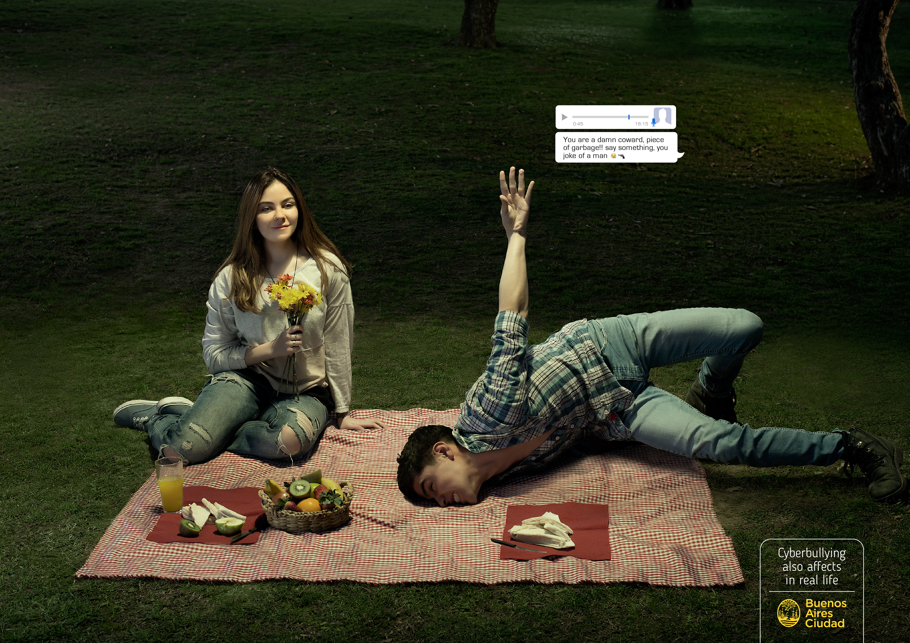
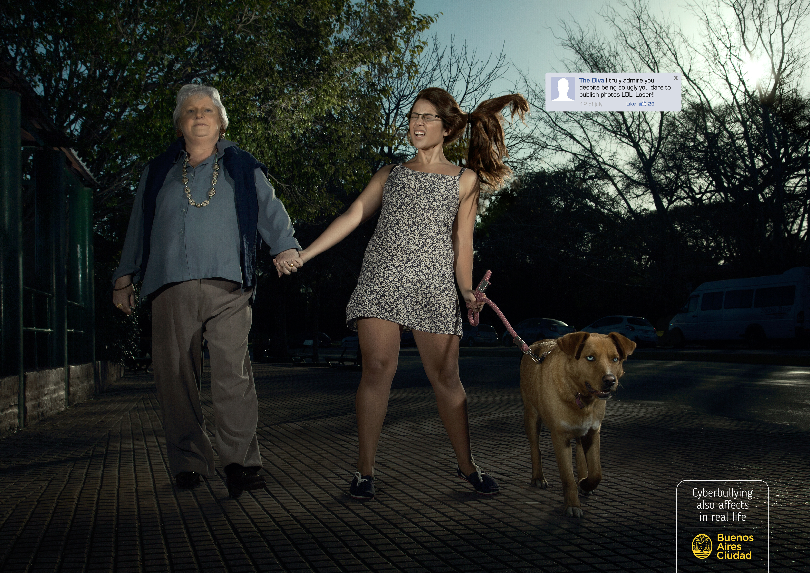

Developed at Brother Escuela de Creativos for the Government of the City of Buenos Aires, this campaign addressed the growing problem of cyberbullying by focusing on one of the main barriers to confronting it: many parents still dismissed online harassment as simply “kids being kids on the internet.”
But digital aggression can be persistent, massive and extremely damaging. Its intensity, reach and constant presence can have devastating consequences for victims.
The campaign set out to challenge that perception through a direct concept and an impactful execution built around the visual language of social media and digital notifications.
I worked on the project as Creative Director & Copywriter, contributing to the development of the concept, narrative and execution across both the audiovisual spot and the print campaign.



The Insight
The starting point came from a simple but dangerous perception:
many parents still saw cyberbullying as something less serious
than physical bullying because it happened “on the internet.”
But digital aggression does not disappear when the screen is turned off.
Its persistence, scale and intensity can follow victims throughout
their daily lives, making the emotional impact constant and difficult
to escape.
The real challenge was therefore not only to talk about cyberbullying,
but to make adults understand that online aggression can be as serious
— or even more serious — than physical bullying.
The Idea
We transformed digital aggression into something physical.
The campaign imagined Facebook, Instagram and video-game notifications
as if they were actual blows delivered by an invisible aggressor.
In the audiovisual execution, the victim is physically attacked by
an unseen force while going through everyday situations: alone in their
bedroom, spending time with family, or coming back from football.
The metaphor made the impact of cyberbullying visible by turning
something apparently intangible into something physical, immediate
and impossible to ignore.
The print campaign extended the same idea through graphic executions
based on the visual language of digital platforms.
My Role
I worked on the project as
Creative Director & Copywriter.
My role included developing the central creative concept, shaping the
campaign narrative and copy, and helping direct the creative execution
across both the audiovisual spot and the print pieces.
The project required translating a complex social issue into a simple
visual metaphor that could communicate the persistence and intensity
of digital aggression without relying on long explanations.
How I Think
Turning an invisible form of aggression into something physical and immediate — using the language of the medium itself to make its consequences impossible to dismiss.
Credits
Client:
Government of the City of Buenos Aires
Institution:
Brother Escuela de Creativos
Executive Creative Director:
Juan Martín Rezonico
Creative Direction:
David Carrillo / Moisés Ojeda
Art Direction:
David Carrillo
Copywriting:
Moisés Ojeda
Director of Photography / Photography:
Cristo Oviedo